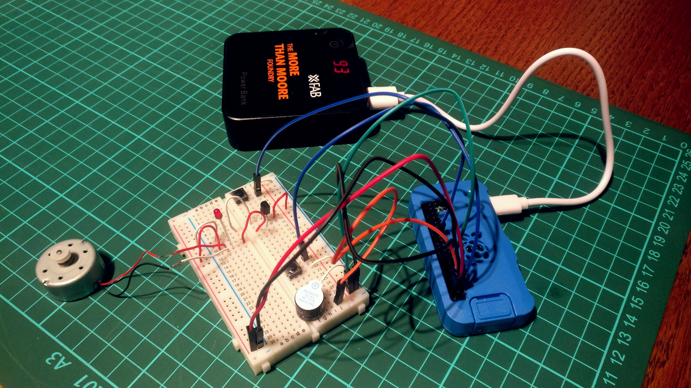

2017-03-11: Raspberry Pi Zero W

I always wanted one of those cute Raspberries, even if I didn't know what for - just out of curiosity and because they look so cute and all the things you could do with them.
Finally I decided to buy the new Raspberry Pi Zero W because of the now integrated WLAN/Bluetooth-Chip and my OneDrive-Storage getting to small for all my important stuff. My plan was to setup my own Cloud-Server (Got it? OwnCloud). Luckily Amazon had a 200 GB MicroSD-Card on sale, which perfectly fitted my needs.
After setting up Raspian I installed OwnCloud and was disappointed that the troughput was just about 2 MB/s.
After my attempt to abuse this little computer as Cloud-Storage I began experimenting with it as controller for some electro-mechanical devices. After all thats what all Raspberry Pis are designed for.
It was the first time that I made software interact with the physical world by writing a Python script that reacted to pressing a button by switched on LEDs, making noise and starting a motor. After aborting my studies in electrical engeneering it was the first time I understood how fascinating this stuff can be. I GOT HYPED! I whish I had such toys in my childhood.
After that I thought about a usefull project. On a weekend trip I got the idea that I need a maschine that releases foot inside our guinea pigs cage, so they don't starve if we are some days away. So I ordered some parts online and need to pick up my old LEGO boxes to build a first prototype.